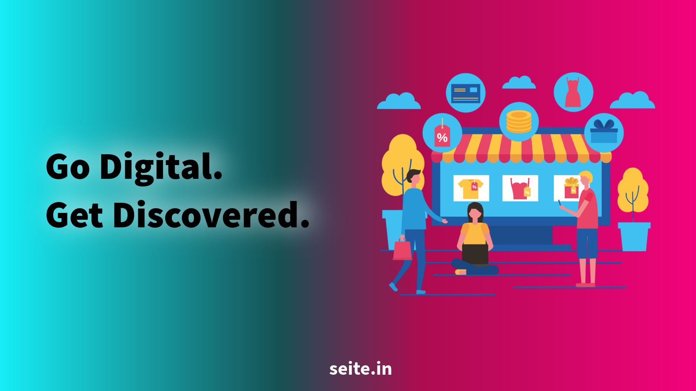

From Local Shop to Online Brand: Digital Presence Tips for Chennai Businesses
Author : Seite Digital Marketing Team
Updated on Oct 10, 2026 | 7 mins read
A customer in Chennai needs a birthday cake, a reliable electrician, a new outfit, or a digital marketing
service. What do they often do first? They search on Google, check reviews, browse social media, or ask for
recommendations online.
For local businesses, this creates an important opportunity. You do not need a large showroom, a huge
advertising budget, or thousands of followers to build an online brand. You need a clear digital presence
that helps people discover your business, trust your products or services, and contact you easily.
Whether you run a retail shop in T. Nagar, a restaurant in Velachery, a boutique in Anna Nagar, or a service
business in Tambaram, the right digital marketing strategy can help you reach more potential customers.
Here are practical ways to turn your local business into a recognizable online brand.
1. Start with a Complete Google Business Profile
When people search for services such as "best bakery near me" or "AC repair in Velachery," Google may
display local businesses through Search and Maps. Your Google Business Profile helps customers find your
location, operating hours, contact details, photos, and reviews.
Google explains that local results are influenced mainly by relevance, distance, and prominence. Keeping
your business information complete and accurate helps Google understand how your business matches a search.
What Chennai businesses should do:
- Use your correct business name, address, phone number, and opening hours.
- Choose the most relevant primary business category.
- Add real photographs of your shop, products, staff, or completed projects.
- List your services and products where applicable.
- Respond professionally to customer reviews.
- Update holiday hours, offers, and other important information.
For example, a furniture shop in Tambaram could use real product photographs and clearly list delivery
options. A beauty salon in Adyar could display its services, opening hours, booking details, and recent
customer reviews.
The goal is simple: help nearby customers understand what you offer before they visit or call.
Read
Google's official local ranking guidance.
2. Build a Website That Turns Visitors into Customers
Social media profiles are useful, but a website gives you greater control over how your business information
is presented. It also creates a destination where customers can explore your services, compare options, and
take action.
Your website does not need dozens of pages. Start with the essentials:
- Home: Explain what your business offers and who it serves.
- About: Introduce your business, experience, and values.
- Products or services: Describe your offerings, benefits, and pricing information where
appropriate.
- Contact: Include your phone number, WhatsApp link, address, business hours, and enquiry
form.
- Reviews or portfolio: Show genuine customer feedback and examples of your work.
Make sure the website loads quickly, works well on mobile phones, and has clear calls to action such as
"Call Now," "Get a Quote," or "Chat on WhatsApp."
For a Chennai-based service provider, a useful page might target a specific service and location, such as
"Interior Design Services in Chennai." Create location-specific pages only when they offer genuinely useful
information for customers in those areas. Avoid publishing multiple nearly identical pages just to target
different neighbourhood names.
3. Use Local SEO to Reach Customers with Buying Intent
Search engine optimization (SEO) helps your website appear when people search for relevant products and
services. For local businesses, the opportunity is to connect your offerings with the places you actually
serve.
Think about the difference between these searches:
- "Digital marketing"
- "Digital marketing agency in Chennai"
- "SEO services for small businesses in Chennai"
The latter searches communicate more specific needs and may indicate stronger commercial intent.
Start by researching the phrases your customers use. Include relevant terms naturally in page titles,
headings, service descriptions, image alt text, and website content.
You can also create helpful articles that answer real customer questions. For example:
- How much does website development cost in Chennai?
- How can a small shop attract more customers online?
- What should you look for when choosing a wedding photographer in Chennai?
Do not assume every local keyword has high search volume or easy competition. Validate your ideas using
Google Search Console, Google Keyword Planner, or other keyword research tools.
A useful local SEO strategy combines relevant website content, accurate business listings, genuine reviews,
and credible local mentions. It is not simply a matter of repeating "Chennai" throughout every page.
4. Turn Social Media into a Brand-Building Channel
Facebook and Instagram can help Chennai businesses demonstrate what makes them different. However, posting
promotional images every day without a clear purpose rarely builds a memorable brand.
Instead, create content around four themes:
- Product and service demonstrations: Show how products work, explain service benefits,
or share before-and-after projects.
- Behind-the-scenes content: Introduce your team, show how products are prepared, or give
customers a look at your daily operations.
- Customer experiences: Share genuine testimonials and customer stories with permission.
- Useful local content: Answer common questions, share seasonal recommendations, and
explain how customers can choose the right product or service.
For example, a Chennai clothing boutique could create short videos showing new arrivals, styling
suggestions, and fabric details. A restaurant could highlight signature dishes, preparation methods, and
customer favourites.
Tamil and English content can both be useful, depending on your audience. Use the language your customers
understand most comfortably.
Choose platforms based on your audience and business goals rather than trying to maintain every social
network at once.
5. Make Customer Reviews Part of Your Marketing
A customer who discovers your business online still needs a reason to trust you. Reviews, testimonials,
detailed service information, and real photographs help reduce uncertainty.
Make it easy for customers to leave honest feedback by sharing your review link after a completed purchase
or service. Respond to positive and negative feedback professionally. If someone raises a genuine concern,
explain how you will address it.
Never purchase fake reviews or offer incentives in exchange for positive ratings. These practices can damage
trust and violate platform policies.
Discussions among local SEO practitioners on Reddit frequently return to the same fundamentals: accurate
business information, genuine reviews, consistent contact details, relevant service pages, and ongoing
maintenance. These are practical starting points, not guaranteed shortcuts to the top of Google.
6. Use Digital Advertising to Generate Measurable Enquiries
Organic visibility takes time. Paid advertising can help businesses reach relevant audiences while their SEO
efforts develop.
Google Ads can target people actively searching for a product or service. Meta Ads can help businesses
introduce their offerings to relevant audiences on Facebook and Instagram.
Start with one clear campaign objective, such as phone calls, qualified enquiries, bookings, or purchases.
For example, a home renovation company serving Chennai could run Google Search campaigns for specific
renovation services. A boutique could test Instagram campaigns featuring new collections and direct
interested customers to WhatsApp.
Set a realistic budget, track enquiries, and evaluate lead quality rather than focusing only on clicks or
impressions.
Illustrative example: Suppose a local service business spends ₹10,000 on advertising and
receives 40 enquiries. Its cost per enquiry is ₹250. If only 10 enquiries become customers, its advertising
cost per acquired customer is ₹1,000.
These are hypothetical figures, not an industry benchmark. The business should compare the acquisition cost
with its profit per customer before deciding whether to increase the budget.
7. Track Results and Improve Every Month
An online presence should support business outcomes, not just generate likes and website visits.
Use Google Analytics 4 to understand website activity and Google Search Console to monitor search
impressions, clicks, queries, and indexing. Track calls, WhatsApp enquiries, form submissions, bookings, and
sales wherever possible.
Review these questions every month:
- Which search terms bring relevant visitors?
- Which pages generate the most enquiries?
- Which social media posts attract genuine customer interest?
- How much does each qualified lead cost?
- Which enquiries turn into paying customers?
LinkedIn's small-business guidance also emphasizes building credibility, reaching new audiences, and using
digital insights to make better decisions. The practical lesson is to treat online marketing as an ongoing
process of testing and improvement, not a one-time setup.
Frequently Asked Questions
How can a small business in Chennai get customers online?
Start with a complete Google Business Profile, a mobile-friendly website or service page, genuine customer
reviews, and consistent social media activity. Add paid advertising when you can track enquiries and sales.
Is a website necessary for a small local shop?
A shop can begin with a Google Business Profile and social media pages. However, a website gives you more
control over business information, search visibility, product details, and customer enquiries as you grow.
How much should a small business spend on digital marketing?
There is no single budget suitable for every business. Start with the channels most relevant to your
customers, define a measurable goal, and increase spending only when results justify it.
How long does local SEO take to work?
There is no guaranteed timeline. Results depend on competition, your website's condition, business
relevance, location, reviews, and the quality of your SEO work. Monitor progress regularly instead of
expecting immediate rankings.
Which social media platform is best for Chennai businesses?
Instagram and Facebook can work well for visually appealing products and consumer services. LinkedIn may be
more suitable for B2B services and professional businesses. Choose based on where your target customers
spend time and how they make purchasing decisions.
Final Thoughts: Build Trust Before Chasing Reach
Moving from a local shop to an online brand does not require doing everything at once. Start by making your
business easy to find, giving customers accurate information, showing the value of your products or
services, and making enquiries simple.
For Chennai businesses, local SEO, a useful website, social media, customer reviews, and carefully measured
advertising can work together to create a stronger digital presence.
Choose two or three priorities, implement them consistently, and measure the results. As your business
grows, expand your strategy based on what your customers actually respond to.
Need help building your online presence?
Seite helps businesses explore digital marketing
solutions across SEO, website development, social media marketing, and paid advertising.
Visit
seite.in to learn more.
1. Which digital marketing services are best for a small business?
A well-kept Google Business Profile, a mobile-friendly website, local SEO,
helpful content, consistent social media, and follow-up with existing
customers are great starting points. Paid ads can come later once these
essentials are ready.
2. Why do some digital marketing efforts fail?
Digital marketing often fails because there is no clear goal, the website
cannot convert visitors into customers, or enquiries are answered too late.
A clear strategy and timely follow-up can make a big difference.
3. Where should a small business put its marketing effort?
Focus on the platforms your customers already use. For most service
businesses, Google is a great place to start, while visual businesses can
benefit from platforms like Instagram.
4. When is the right time to start paid ads?
Start paid advertising when your offer is clear and your website or
WhatsApp link makes it easy for potential customers to enquire.
This helps you make better use of your advertising budget.
5. How much should a small business spend on digital marketing?
The budget depends on your industry, competition, and business goals.
Many small businesses start with a modest monthly budget for two or three
core services and increase spending as they begin to see results.
6. How long does SEO take to show results?
SEO generally takes a few months to show noticeable results. The timeline
depends on your competition, website quality, content, and the consistency
of your SEO efforts.
7. SEO vs PPC: Which should a small business choose?
PPC can generate leads faster while your advertising budget is active,
whereas SEO builds organic visibility over time. Many small businesses
start with one approach and add the other as their needs grow.